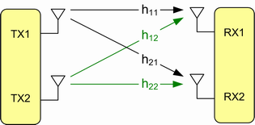
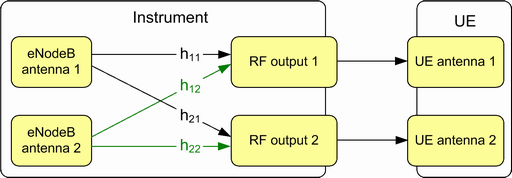
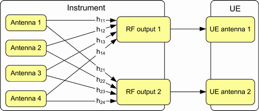

A MIMO 2x2 configuration uses two transmit antennas (TX) and two receive antennas (RX). An ideal radio channel would provide isolated connections between pairs of antennas, so that each RX antenna receives only the signal of one TX antenna.
In practice, an ideal radio channel is not possible. A real radio channel couples the sent signals, so that the RX antennas always receive a combination of the TX antenna signals. The following figure shows a radio channel for MIMO 2x2, assuming that there is only one signal path between each TX and RX antenna.

The channel amplitude and phase responses for the individual transmission paths can be characterized by the complex coefficients h11 to h22.
The indices for TM 2 to 6 specify the receiver first (hab for receiver a / transmitter b). For other transmission modes, the indices specify the transmitter first (hab for transmitter a / receiver b).
In a test setup with the R&S CMW and a UE, the radio channel is typically located within the instrument. Each RF output connector is connected directly to one UE antenna connector.

For fading scenarios, the coefficients are determined dynamically. For scenarios without fading, you can configure static channel coefficients. See for example "MIMO Channel Model TM 2 to TM 6".
A MIMO 4x2 configuration uses four TX and two RX antennas. So the setup is as follows:

For MIMO 4x2 with external RF fading, use the scenario "1CC - External RF Fading - 4x2". This scenario provides the four antenna signals at four different RF connectors.
The principles described here for MIMO 2x2 and MIMO 4x2 apply also to the other MIMO modes. A MIMO axb configuration uses a TX antennas, b RF output paths and b RX antennas.